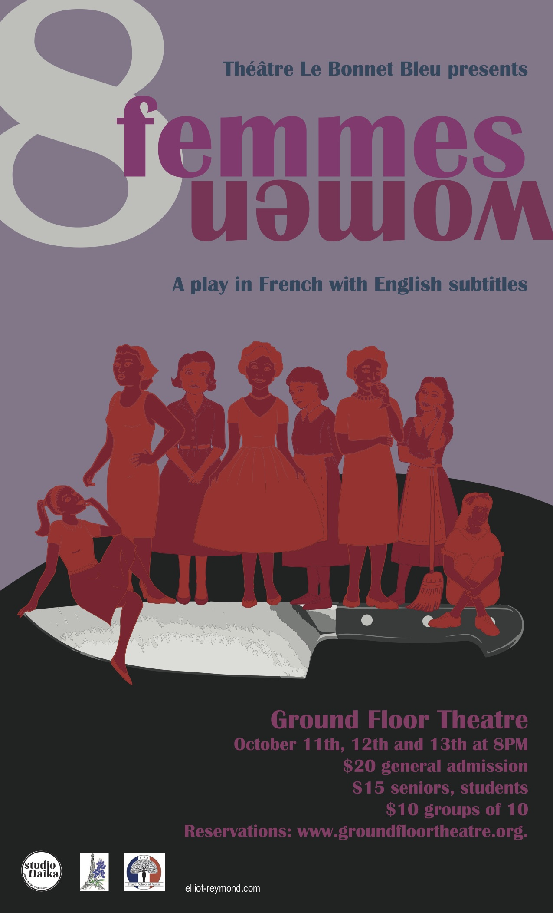

Le Bonnet Bleu Théâtre is proud to present its first production, 8 women, by Robert Thomas. This play will be performed in French with English subtitles at Ground Floor Theatre, October 11th, 12th and 13th at 8PM.
Summary:
Le Bonnet Bleu Théâtre is proud to present its first production, 8 Women, a dark comedy where a murder mystery is the catalyst for truths to be revealed and human pettiness exposed.
In the 1950’s, in a large country house, Suzon reunites with her family during Christmas break when her father, the master of the house, is found murdered, a knife in his back. The seven women from the household, soon joined by an unexpected guest,realize the culprit must be one of them. But the women have secrets and the truth can only be revealed once all the tales have been told.
Directed by:
Hind Louali and Anne-Laure Reymond-Christensen
With:
Brooke Currie, Gaiane Hochard, Lorella Loftus, Laure Miche, Mary Catherine Miller, Géraldine Peyre, Anne-Laure Reymond-Christensen, Rebecca Woodall
Info:
The play will be performed in French with English subtitles
Price:
Tickets may be purchased at Ground Floor Theatre.
Le Bonnet Bleu Théâtre was first started in 2017 and was born from a passion for independent theatre and the desire to promote the French language through live entertainment. We aim to foster a safe and friendly environment for French speakers that generates creativity and imagination.
We are very excited to present our first production, 8 women, at Ground Floor Theatre on October 11th, 12th and 13th.
President and Founder
I fell in love with independent theatre in 2009 and have been involved with French and English speaking troupes in Houston, Texas and Norway. While my main focus has been acting, I have held various positions such as director, prop manager, marketing manager and secretary of the board.
When I moved back to Texas in 2016, I was eager to recreate my previous experiences and decided to create a French speaking theatre in Austin. I sent a message in bottle via social media and found a handful of folks interested in the project. Le Bonnet Bleu Théâtre was born.
Vice-President
More to come!
Treasurer and Director
more to come!
Are you interested in getting involved with the troupe or simply keeping up with Le Bonnet Bleu's news? Contact us at bonnetbleutheatre@gmail.com we promise we won't spam you.